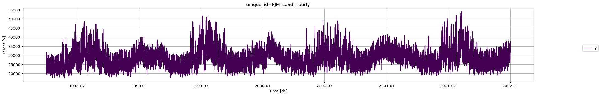
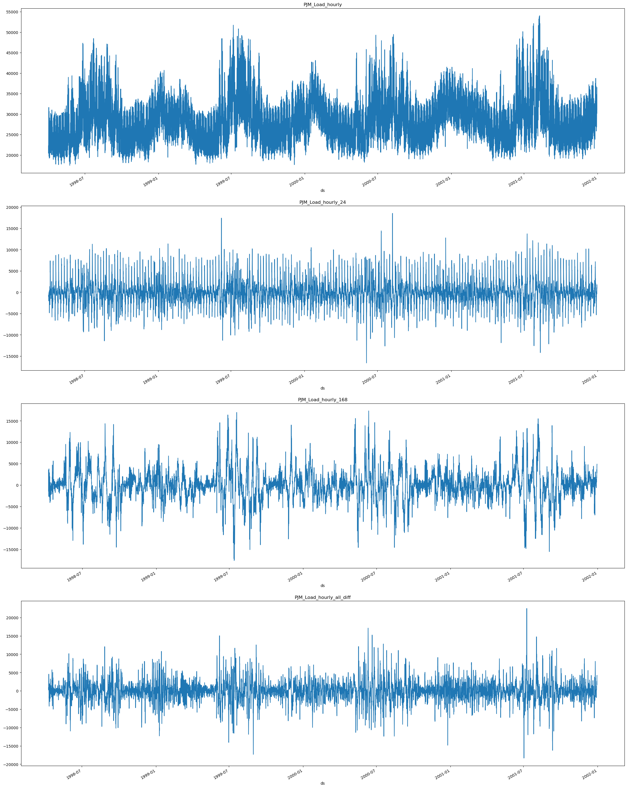
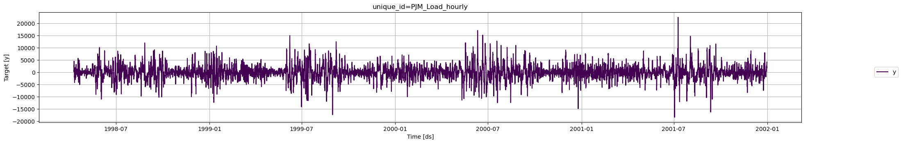
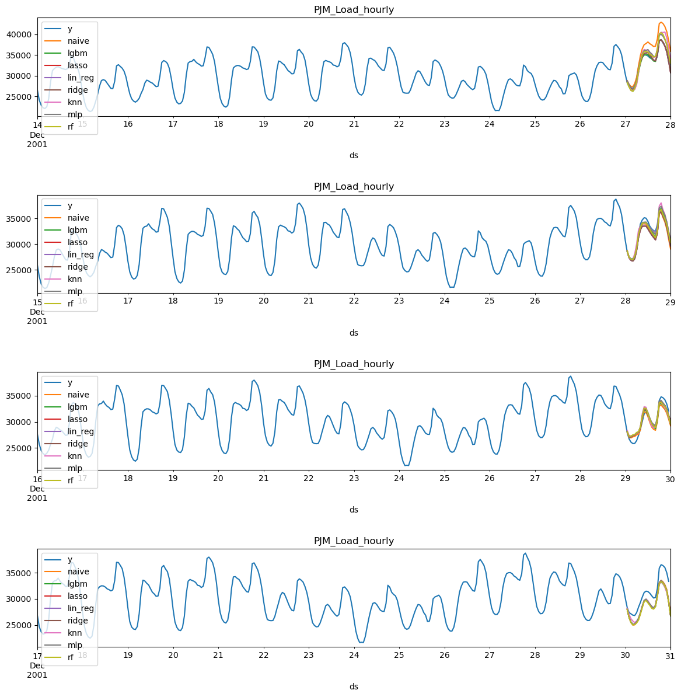
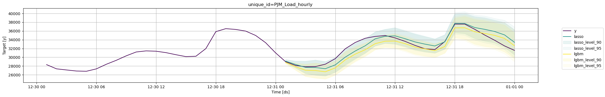

# %%capture
# !pip install prophet
# !pip install -U mlforecast
# !pip install -U utilsforecastElectricity Load Forecast
In this example we will show how to perform electricity load forecasting using MLForecast alongside many models. We also compare them against the prophet library.
Introduction
Some time series are generated from very low frequency data. These data generally exhibit multiple seasonalities. For example, hourly data may exhibit repeated patterns every hour (every 24 observations) or every day (every 24 * 7, hours per day, observations). This is the case for electricity load. Electricity load may vary hourly, e.g., during the evenings electricity consumption may be expected to increase. But also, the electricity load varies by week. Perhaps on weekends there is an increase in electrical activity.
In this example we will show how to model the two seasonalities of the time series to generate accurate forecasts in a short time. We will use hourly PJM electricity load data. The original data can be found here.
Libraries
In this example we will use the following libraries:
mlforecast. Accurate and ⚡️ fast forecasting withc lassical machine learning models.prophet. Benchmark model developed by Facebook.utilsforecast. Library with different functions for forecasting evaluation.
If you have already installed the libraries you can skip the next cell, if not be sure to run it.
Forecast using Multiple Seasonalities
Electricity Load Data
According to the dataset’s page,
PJM Interconnection LLC (PJM) is a regional transmission organization (RTO) in the United States. It is part of the Eastern Interconnection grid operating an electric transmission system serving all or parts of Delaware, Illinois, Indiana, Kentucky, Maryland, Michigan, New Jersey, North Carolina, Ohio, Pennsylvania, Tennessee, Virginia, West Virginia, and the District of Columbia. The hourly power consumption data comes from PJM’s website and are in megawatts (MW).
Let’s take a look to the data.
import matplotlib.pyplot as plt
import numpy as np
import pandas as pd
from utilsforecast.plotting import plot_seriespd.plotting.register_matplotlib_converters()
plt.rc("figure", figsize=(10, 8))
plt.rc("font", size=10)data_url = 'https://raw.githubusercontent.com/panambY/Hourly_Energy_Consumption/master/data/PJM_Load_hourly.csv'
df = pd.read_csv(data_url, parse_dates=['Datetime'])
df.columns = ['ds', 'y']
df.insert(0, 'unique_id', 'PJM_Load_hourly')
df['ds'] = pd.to_datetime(df['ds'])
df = df.sort_values(['unique_id', 'ds']).reset_index(drop=True)
print(f'Shape of the data {df.shape}')
df.tail()Shape of the data (32896, 3)| unique_id | ds | y | |
|---|---|---|---|
| 32891 | PJM_Load_hourly | 2001-12-31 20:00:00 | 36392.0 |
| 32892 | PJM_Load_hourly | 2001-12-31 21:00:00 | 35082.0 |
| 32893 | PJM_Load_hourly | 2001-12-31 22:00:00 | 33890.0 |
| 32894 | PJM_Load_hourly | 2001-12-31 23:00:00 | 32590.0 |
| 32895 | PJM_Load_hourly | 2002-01-01 00:00:00 | 31569.0 |
fig = plot_series(df)
We clearly observe that the time series exhibits seasonal patterns. Moreover, the time series contains 32,896 observations, so it is necessary to use very computationally efficient methods to display them in production.
We are going to split our series in order to create a train and test set. The model will be tested using the last 24 hours of the timeseries.
threshold_time = df['ds'].max() - pd.Timedelta(hours=24)
# Split the dataframe
df_train = df[df['ds'] <= threshold_time]
df_last_24_hours = df[df['ds'] > threshold_time]Analizing Seasonalities
First we must visualize the seasonalities of the model. As mentioned before, the electricity load presents seasonalities every 24 hours (Hourly) and every 24 * 7 (Daily) hours. Therefore, we will use [24, 24 * 7] as the seasonalities for the model. In order to analize how they affect our series we are going to use the Difference method.
from mlforecast import MLForecast
from mlforecast.target_transforms import DifferencesWe can use the MLForecast.preprocess method to explore different transformations. It looks like these series have a strong seasonality on the hour of the day, so we can subtract the value from the same hour in the previous day to remove it. This can be done with the mlforecast.target_transforms.Differences transformer, which we pass through target_transforms.
In order to analize the trends individually and combined we are going to plot them individually and combined. Therefore, we can compare them against the original series. We can use the next function for that.
def plot_differences(df, differences,fname):
prep = [df]
# Plot individual Differences
for d in differences:
fcst = MLForecast(
models=[], # we're not interested in modeling yet
freq='H', # our series have hourly frequency
target_transforms=[Differences([d])],
)
df_ = fcst.preprocess(df)
df_['unique_id'] = df_['unique_id'] + f'_{d}'
prep.append(df_)
# Plot combined Differences
fcst = MLForecast(
models=[], # we're not interested in modeling yet
freq='H', # our series have hourly frequency
target_transforms=[Differences([24, 24*7])],
)
df_ = fcst.preprocess(df)
df_['unique_id'] = df_['unique_id'] + f'_all_diff'
prep.append(df_)
prep = pd.concat(prep, ignore_index=True)
#return prep
n_series = len(prep['unique_id'].unique())
fig, ax = plt.subplots(nrows=n_series, figsize=(7 * n_series, 10*n_series), squeeze=False)
for title, axi in zip(prep['unique_id'].unique(), ax.flat):
df_ = prep[prep['unique_id'] == title]
df_.set_index('ds')['y'].plot(title=title, ax=axi)
fig.savefig(f'../../figs/{fname}', bbox_inches='tight')
plt.close()Since the seasonalities are present at 24 hours (daily) and 24*7 (weekly) we are going to substract them from the serie using Differences([24, 24*7]) and plot them.
plot_differences(df=df_train, differences=[24, 24*7], fname='load_forecasting__differences.png')
As we can see when we extract the 24 difference (daily) in PJM_Load_hourly_24 the series seem to stabilize sisnce the peaks seem more uniform in comparison with the original series PJM_Load_hourly.
When we extrac the 24*7 (weekly) PJM_Load_hourly_168 difference we can see there is more periodicity in the peaks in comparison with the original series.
Finally we can see the result from the combined result from substracting all the differences PJM_Load_hourly_all_diff.
For modeling we are going to use both difference for the forecasting, therefore we are setting the argument target_transforms from the MLForecast object equal to [Differences([24, 24*7])], if we wanted to include a yearly difference we would need to add the term 24*365.
fcst = MLForecast(
models=[], # we're not interested in modeling yet
freq='H', # our series have hourly frequency
target_transforms=[Differences([24, 24*7])],
)
prep = fcst.preprocess(df_train)
prep| unique_id | ds | y | |
|---|---|---|---|
| 192 | PJM_Load_hourly | 1998-04-09 02:00:00 | 831.0 |
| 193 | PJM_Load_hourly | 1998-04-09 03:00:00 | 918.0 |
| 194 | PJM_Load_hourly | 1998-04-09 04:00:00 | 760.0 |
| 195 | PJM_Load_hourly | 1998-04-09 05:00:00 | 849.0 |
| 196 | PJM_Load_hourly | 1998-04-09 06:00:00 | 710.0 |
| ... | ... | ... | ... |
| 32867 | PJM_Load_hourly | 2001-12-30 20:00:00 | 3417.0 |
| 32868 | PJM_Load_hourly | 2001-12-30 21:00:00 | 3596.0 |
| 32869 | PJM_Load_hourly | 2001-12-30 22:00:00 | 3501.0 |
| 32870 | PJM_Load_hourly | 2001-12-30 23:00:00 | 3939.0 |
| 32871 | PJM_Load_hourly | 2001-12-31 00:00:00 | 4235.0 |
32680 rows × 3 columns
fig = plot_series(prep)
Model Selection with Cross-Validation
We can test many models simoultaneously using MLForecast cross_validation. We can import lightgbm and scikit-learn models and try different combinations of them, alongside different target transformations (as the ones we created previously) and historical variables.
You can see an in-depth tutorial on how to use MLForecast Cross Validation methods here
import lightgbm as lgb
from mlforecast.target_transforms import Differences
from window_ops.expanding import expanding_mean
from window_ops.rolling import rolling_mean
from sklearn.base import BaseEstimator
from sklearn.linear_model import Lasso, LinearRegression, Ridge
from sklearn.neighbors import KNeighborsRegressor
from sklearn.neural_network import MLPRegressor
from sklearn.ensemble import RandomForestRegressorWe can create a benchmark Naive model that uses the electricity load of the last hour as prediction lag1 as showed in the next cell. You can create your own models and try them with MLForecast using the same structure.
class Naive(BaseEstimator):
def fit(self, X, y):
return self
def predict(self, X):
return X['lag1']Now let’s try differen models from the scikit-learn library: Lasso, LinearRegression, Ridge, KNN, MLP and Random Forest alongside the LightGBM. You can add any model to the dictionary to train and compare them by adding them to the dictionary (models) as shown.
# Model dictionary
models ={
'naive': Naive(),
'lgbm': lgb.LGBMRegressor(verbosity=-1),
'lasso': Lasso(),
'lin_reg': LinearRegression(),
'ridge': Ridge(),
'knn': KNeighborsRegressor(),
'mlp': MLPRegressor(),
'rf': RandomForestRegressor()
}The we can instanciate the MLForecast class with the models we want to try along side target_transforms, lags, lag_transforms, and date_features. All this features are applied to the models we selected.
In this case we use the 1st, 12th and 24th lag, which are passed as a list. Potentially you could pass a range.
lags=[1,12,24]Lag transforms are defined as a dictionary where the keys are the lags and the values are lists of functions that transform an array. These must be numba jitted functions (so that computing the features doesn’t become a bottleneck). There are some implemented in the window-ops package but you can also implement your own.
For this example we applied an expanding mean to the first lag, and a rolling mean to the 24th lag.
lag_transforms={
1: [expanding_mean],
24: [(rolling_mean, 48)],
}For using the date features you need to be sure that your time column is made of timestamps. Then it might make sense to extract features like week, dayofweek, quarter, etc. You can do that by passing a list of strings with pandas time/date components. You can also pass functions that will take the time column as input, as we’ll show here.
Here we add month, hour and dayofweek features:
date_features=['month', 'hour', 'dayofweek']
mlf = MLForecast(
models = models,
freq='H', # our series have hourly frequency
target_transforms=[Differences([24, 24*7])],
lags=[1,12,24], # Lags to be used as features
lag_transforms={
1: [expanding_mean],
24: [(rolling_mean, 48)],
},
date_features=['month', 'hour', 'dayofweek']
)Now we use the cross_validation method to train and evalaute the models. + df: Receives the training data + h: Forecast horizon + n_windows: The number of folds we want to predict
You can specify the names of the time series id, time and target columns. + id_col:Column that identifies each serie ( Default unique_id ) + time_col: Column that identifies each timestep, its values can be timestamps or integer( Default ds ) + target_col:Column that contains the target ( Default y )
crossvalidation_df = mlf.cross_validation(
df=df_train,
h=24,
n_windows=4,
refit=False,
)
crossvalidation_df.head()| unique_id | ds | cutoff | y | naive | lgbm | lasso | lin_reg | ridge | knn | mlp | rf | |
|---|---|---|---|---|---|---|---|---|---|---|---|---|
| 0 | PJM_Load_hourly | 2001-12-27 01:00:00 | 2001-12-27 | 28332.0 | 28837.0 | 28526.505572 | 28703.185712 | 28702.625949 | 28702.625956 | 28479.0 | 28834.839479 | 28277.94 |
| 1 | PJM_Load_hourly | 2001-12-27 02:00:00 | 2001-12-27 | 27329.0 | 27969.0 | 27467.860847 | 27693.502318 | 27692.395954 | 27692.395969 | 27521.6 | 27940.414699 | 27307.90 |
| 2 | PJM_Load_hourly | 2001-12-27 03:00:00 | 2001-12-27 | 26986.0 | 27435.0 | 26605.710615 | 26991.795124 | 26990.157567 | 26990.157589 | 26451.6 | 27370.170779 | 26599.23 |
| 3 | PJM_Load_hourly | 2001-12-27 04:00:00 | 2001-12-27 | 27009.0 | 27401.0 | 26284.065138 | 26789.418399 | 26787.262262 | 26787.262291 | 26388.4 | 27294.232077 | 26366.54 |
| 4 | PJM_Load_hourly | 2001-12-27 05:00:00 | 2001-12-27 | 27555.0 | 28169.0 | 26823.617078 | 27369.643789 | 27366.983075 | 27366.983111 | 26779.6 | 28014.090505 | 27095.55 |
Now we can plot each model and window (fold) to see how it behaves
def plot_cv(df, df_cv, uid, fname, last_n=24 * 14, models={}):
cutoffs = df_cv.query('unique_id == @uid')['cutoff'].unique()
fig, ax = plt.subplots(nrows=len(cutoffs), ncols=1, figsize=(14, 14), gridspec_kw=dict(hspace=0.8))
for cutoff, axi in zip(cutoffs, ax.flat):
max_date = df_cv.query('unique_id == @uid & cutoff == @cutoff')['ds'].max()
df[df['ds'] < max_date].query('unique_id == @uid').tail(last_n).set_index('ds').plot(ax=axi, title=uid, y='y')
for m in models.keys():
df_cv.query('unique_id == @uid & cutoff == @cutoff').set_index('ds').plot(ax=axi, title=uid, y=m)
fig.savefig(f'../../figs/{fname}', bbox_inches='tight')
plt.close()plot_cv(df_train, crossvalidation_df, 'PJM_Load_hourly', 'load_forecasting__predictions.png', models=models)
Visually examining the forecasts can give us some idea of how the model is behaving, yet in order to asses the performace we need to evaluate them trough metrics. For that we use the utilsforecast library that contains many useful metrics and an evaluate function.
from utilsforecast.losses import *
from utilsforecast.evaluation import evaluate# Metrics to be used for evaluation
metrics = [
mae,
rmse,
mape,
smape
]# Function to evaluate the crossvalidation
def evaluate_crossvalidation(crossvalidation_df, metrics, models):
evaluations = []
for c in crossvalidation_df['cutoff'].unique():
df_cv = crossvalidation_df.query('cutoff == @c')
evaluation = evaluate(
df = df_cv,
metrics=metrics,
models=list(models.keys())
)
evaluations.append(evaluation)
evaluations = pd.concat(evaluations, ignore_index=True).drop(columns='unique_id')
evaluations = evaluations.groupby('metric').mean()
return evaluations.style.background_gradient(cmap='RdYlGn_r', axis=1)evaluate_crossvalidation(crossvalidation_df, metrics, models)| naive | lgbm | lasso | lin_reg | ridge | knn | mlp | rf | |
|---|---|---|---|---|---|---|---|---|
| metric | ||||||||
| mae | 1631.395833 | 971.536200 | 1003.796433 | 1007.998597 | 1007.998547 | 1248.145833 | 1268.841369 | 1219.286771 |
| mape | 0.049759 | 0.030966 | 0.031760 | 0.031888 | 0.031888 | 0.038721 | 0.039149 | 0.037969 |
| rmse | 1871.398919 | 1129.713256 | 1148.616156 | 1153.262719 | 1153.262664 | 1451.964390 | 1463.836007 | 1409.549197 |
| smape | 0.024786 | 0.015886 | 0.016269 | 0.016338 | 0.016338 | 0.019549 | 0.019704 | 0.019252 |
We can se that the model lgbm has top performance in most metrics folowed by the lasso regression. Both models perform way better than the naive.
Test Evaluation
Now we are going to evaluate their perfonce in the test set. We can use both of them for forecasting the test alongside some prediction intervals. For that we can use the PredictionIntervals function in mlforecast.utils.
You can see an in-depth tutotorial of Probabilistic Forecasting here
from mlforecast.utils import PredictionIntervalsmodels_evaluation ={
'lgbm': lgb.LGBMRegressor(verbosity=-1),
'lasso': Lasso(),
}
mlf_evaluation = MLForecast(
models = models_evaluation,
freq='H', # our series have hourly frequency
target_transforms=[Differences([24, 24*7])],
lags=[1,12,24],
lag_transforms={
1: [expanding_mean],
24: [(rolling_mean, 48)],
},
date_features=['month', 'hour', 'dayofweek']
)Now we’re ready to generate the point forecasts and the prediction intervals. To do this, we’ll use the fit method, which takes the following arguments:
df: Series data in long format.id_col: Column that identifies each series. In our case, unique_id.time_col: Column that identifies each timestep, its values can be timestamps or integers. In our case, ds.target_col: Column that contains the target. In our case, y.
The PredictionIntervals function is used to compute prediction intervals for the models using Conformal Prediction. The function takes the following arguments: + n_windows: represents the number of cross-validation windows used to calibrate the intervals + h: the forecast horizon
mlf_evaluation.fit(
df = df_train,
prediction_intervals=PredictionIntervals(n_windows=4, h=24)
)MLForecast(models=[lgbm, lasso], freq=<Hour>, lag_features=['lag1', 'lag12', 'lag24', 'expanding_mean_lag1', 'rolling_mean_lag24_window_size48'], date_features=['month', 'hour', 'dayofweek'], num_threads=1)Now that the model has been trained we are going to forecast the next 24 hours using the predict method so we can compare them to our test data. Additionally, we are going to create prediction intervals at levels [90,95].
levels = [90, 95] # Levels for prediction intervals
forecasts = mlf_evaluation.predict(24, level=levels)
forecasts.head()| unique_id | ds | lgbm | lasso | lgbm-lo-95 | lgbm-lo-90 | lgbm-hi-90 | lgbm-hi-95 | lasso-lo-95 | lasso-lo-90 | lasso-hi-90 | lasso-hi-95 | |
|---|---|---|---|---|---|---|---|---|---|---|---|---|
| 0 | PJM_Load_hourly | 2001-12-31 01:00:00 | 28847.573176 | 29124.085976 | 28544.593464 | 28567.603130 | 29127.543222 | 29150.552888 | 28762.752269 | 28772.604275 | 29475.567677 | 29485.419682 |
| 1 | PJM_Load_hourly | 2001-12-31 02:00:00 | 27862.589195 | 28365.330749 | 27042.311414 | 27128.839888 | 28596.338503 | 28682.866977 | 27528.548959 | 27619.065224 | 29111.596275 | 29202.112539 |
| 2 | PJM_Load_hourly | 2001-12-31 03:00:00 | 27044.418960 | 27712.161676 | 25596.659896 | 25688.230426 | 28400.607493 | 28492.178023 | 26236.955369 | 26338.087102 | 29086.236251 | 29187.367984 |
| 3 | PJM_Load_hourly | 2001-12-31 04:00:00 | 26976.104125 | 27661.572733 | 25249.961527 | 25286.024722 | 28666.183529 | 28702.246724 | 25911.133521 | 25959.815715 | 29363.329750 | 29412.011944 |
| 4 | PJM_Load_hourly | 2001-12-31 05:00:00 | 26694.246238 | 27393.922370 | 25044.220845 | 25051.548832 | 28336.943644 | 28344.271631 | 25751.547897 | 25762.524815 | 29025.319924 | 29036.296843 |
The predict method returns a DataFrame witht the predictions for each model (lasso and lgbm) along side the prediction tresholds. The high-threshold is indicated by the keyword hi, the low-threshold by the keyword lo, and the level by the number in the column names.
test = df_last_24_hours.merge(forecasts, how='left', on=['unique_id', 'ds'])
test.head()| unique_id | ds | y | lgbm | lasso | lgbm-lo-95 | lgbm-lo-90 | lgbm-hi-90 | lgbm-hi-95 | lasso-lo-95 | lasso-lo-90 | lasso-hi-90 | lasso-hi-95 | |
|---|---|---|---|---|---|---|---|---|---|---|---|---|---|
| 0 | PJM_Load_hourly | 2001-12-31 01:00:00 | 29001.0 | 28847.573176 | 29124.085976 | 28544.593464 | 28567.603130 | 29127.543222 | 29150.552888 | 28762.752269 | 28772.604275 | 29475.567677 | 29485.419682 |
| 1 | PJM_Load_hourly | 2001-12-31 02:00:00 | 28138.0 | 27862.589195 | 28365.330749 | 27042.311414 | 27128.839888 | 28596.338503 | 28682.866977 | 27528.548959 | 27619.065224 | 29111.596275 | 29202.112539 |
| 2 | PJM_Load_hourly | 2001-12-31 03:00:00 | 27830.0 | 27044.418960 | 27712.161676 | 25596.659896 | 25688.230426 | 28400.607493 | 28492.178023 | 26236.955369 | 26338.087102 | 29086.236251 | 29187.367984 |
| 3 | PJM_Load_hourly | 2001-12-31 04:00:00 | 27874.0 | 26976.104125 | 27661.572733 | 25249.961527 | 25286.024722 | 28666.183529 | 28702.246724 | 25911.133521 | 25959.815715 | 29363.329750 | 29412.011944 |
| 4 | PJM_Load_hourly | 2001-12-31 05:00:00 | 28427.0 | 26694.246238 | 27393.922370 | 25044.220845 | 25051.548832 | 28336.943644 | 28344.271631 | 25751.547897 | 25762.524815 | 29025.319924 | 29036.296843 |
Now we can evaluate the metrics and performance in the test set.
evaluate(
df = test,
metrics=metrics,
models=list(models_evaluation.keys())
)| unique_id | metric | lgbm | lasso | |
|---|---|---|---|---|
| 0 | PJM_Load_hourly | mae | 1092.050817 | 899.979743 |
| 1 | PJM_Load_hourly | rmse | 1340.422762 | 1163.695525 |
| 2 | PJM_Load_hourly | mape | 0.033600 | 0.027688 |
| 3 | PJM_Load_hourly | smape | 0.017137 | 0.013812 |
We can see that the lasso regression performed slighty better than the LightGBM for the test set. Additonally, we can also plot the forecasts alongside their prediction intervals. For that we can use the plot_series method available in utilsforecast.plotting.
We can plot one or many models at once alongside their coinfidence intervals.
fig = plot_series(
df_train,
test,
models=['lasso', 'lgbm'],
plot_random=False,
level=levels,
max_insample_length=24
)
Comparison with Prophet
One of the most widely used models for time series forecasting is Prophet. This model is known for its ability to model different seasonalities (weekly, daily yearly). We will use this model as a benchmark to see if the lgbm alongside MLForecast adds value for this time series.
from prophet import Prophet
from time import time# create prophet model
prophet = Prophet(interval_width=0.9)
init = time()
prophet.fit(df_train)
# produce forecasts
future = prophet.make_future_dataframe(periods=len(df_last_24_hours), freq='H', include_history=False)
forecast_prophet = prophet.predict(future)
end = time()
# data wrangling
forecast_prophet = forecast_prophet[['ds', 'yhat', 'yhat_lower', 'yhat_upper']]
forecast_prophet.columns = ['ds', 'Prophet', 'Prophet-lo-90', 'Prophet-hi-90']
forecast_prophet.insert(0, 'unique_id', 'PJM_Load_hourly')
forecast_prophet.head()| unique_id | ds | Prophet | Prophet-lo-90 | Prophet-hi-90 | |
|---|---|---|---|---|---|
| 0 | PJM_Load_hourly | 2001-12-31 01:00:00 | 25294.246960 | 20452.615295 | 30151.111598 |
| 1 | PJM_Load_hourly | 2001-12-31 02:00:00 | 24000.725423 | 18954.861631 | 28946.645807 |
| 2 | PJM_Load_hourly | 2001-12-31 03:00:00 | 23324.771966 | 18562.568378 | 28009.837383 |
| 3 | PJM_Load_hourly | 2001-12-31 04:00:00 | 23332.519871 | 18706.835864 | 28253.861051 |
| 4 | PJM_Load_hourly | 2001-12-31 05:00:00 | 24107.126827 | 18966.217684 | 28907.516733 |
time_prophet = (end - init)
print(f'Prophet Time: {time_prophet:.2f} seconds')Prophet Time: 36.90 secondsmodels_comparison ={
'lgbm': lgb.LGBMRegressor(verbosity=-1)
}
mlf_comparison = MLForecast(
models = models_comparison,
freq='H', # our series have hourly frequency
target_transforms=[Differences([24, 24*7])],
lags=[1,12,24],
lag_transforms={
1: [expanding_mean],
24: [(rolling_mean, 48)],
},
date_features=['month', 'hour', 'dayofweek']
)
init = time()
mlf_comparison.fit(
df = df_train,
prediction_intervals=PredictionIntervals(n_windows=4, h=24)
)
levels = [90]
forecasts_comparison = mlf_comparison.predict(24, level=levels)
end = time()
forecasts_comparison.head()| unique_id | ds | lgbm | lgbm-lo-90 | lgbm-hi-90 | |
|---|---|---|---|---|---|
| 0 | PJM_Load_hourly | 2001-12-31 01:00:00 | 28847.573176 | 28567.603130 | 29127.543222 |
| 1 | PJM_Load_hourly | 2001-12-31 02:00:00 | 27862.589195 | 27128.839888 | 28596.338503 |
| 2 | PJM_Load_hourly | 2001-12-31 03:00:00 | 27044.418960 | 25688.230426 | 28400.607493 |
| 3 | PJM_Load_hourly | 2001-12-31 04:00:00 | 26976.104125 | 25286.024722 | 28666.183529 |
| 4 | PJM_Load_hourly | 2001-12-31 05:00:00 | 26694.246238 | 25051.548832 | 28336.943644 |
time_lgbm = (end - init)
print(f'LGBM Time: {time_lgbm:.2f} seconds')LGBM Time: 1.34 secondsmetrics_comparison = df_last_24_hours.merge(forecasts_comparison, how='left', on=['unique_id', 'ds']).merge(
forecast_prophet, how='left', on=['unique_id', 'ds'])
metrics_comparison = evaluate(
df = metrics_comparison,
metrics=metrics,
models=['Prophet', 'lgbm']
)
metrics_comparison.reset_index(drop=True).style.background_gradient(cmap='RdYlGn_r', axis=1)| unique_id | metric | Prophet | lgbm | |
|---|---|---|---|---|
| 0 | PJM_Load_hourly | mae | 2282.966977 | 1092.050817 |
| 1 | PJM_Load_hourly | rmse | 2721.817203 | 1340.422762 |
| 2 | PJM_Load_hourly | mape | 0.073750 | 0.033600 |
| 3 | PJM_Load_hourly | smape | 0.038633 | 0.017137 |
As we can see lgbm had consistently better metrics than prophet.
metrics_comparison['improvement'] = metrics_comparison['Prophet'] / metrics_comparison['lgbm']
metrics_comparison['improvement'] = metrics_comparison['improvement'].apply(lambda x: f'{x:.2f}')
metrics_comparison.set_index('metric')[['improvement']]| improvement | |
|---|---|
| metric | |
| mae | 2.09 |
| rmse | 2.03 |
| mape | 2.19 |
| smape | 2.25 |
print(f'lgbm with MLForecast has a speedup of {time_prophet/time_lgbm:.2f} compared with prophet')lgbm with MLForecast has a speedup of 27.62 compared with prophetWe can see that lgbm with MLForecast was able to provide metrics at least twice as good as Prophet as seen in the column improvement above, and way faster.
Give us a ⭐ on Github